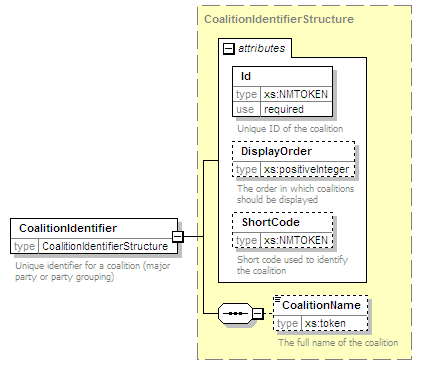

| diagram |
 |
| namespace |
http://www.aec.gov.au/xml/schema/mediafeed |
| type |
CoalitionIdentifierStructure |
| properties |
|
| children |
CoalitionName |
| used by |
|
| attributes |
| Name | Type | Use | Default | Fixed | annotation | | Id | xs:NMTOKEN | required | | | | documentation | | Unique ID of the coalition |
| | DisplayOrder | xs:positiveInteger | | | | | documentation | | The order in which coalitions should be displayed |
| | ShortCode | xs:NMTOKEN | | | | | documentation | | Short code used to identify the coalition |
|
|
| annotation |
| documentation | | Unique identifier for a coalition (major party or party grouping) |
|
| source |
<xs:element name="CoalitionIdentifier" type="CoalitionIdentifierStructure">
<xs:annotation>
<xs:documentation>Unique identifier for a coalition (major party or party grouping)</xs:documentation>
</xs:annotation>
</xs:element> |